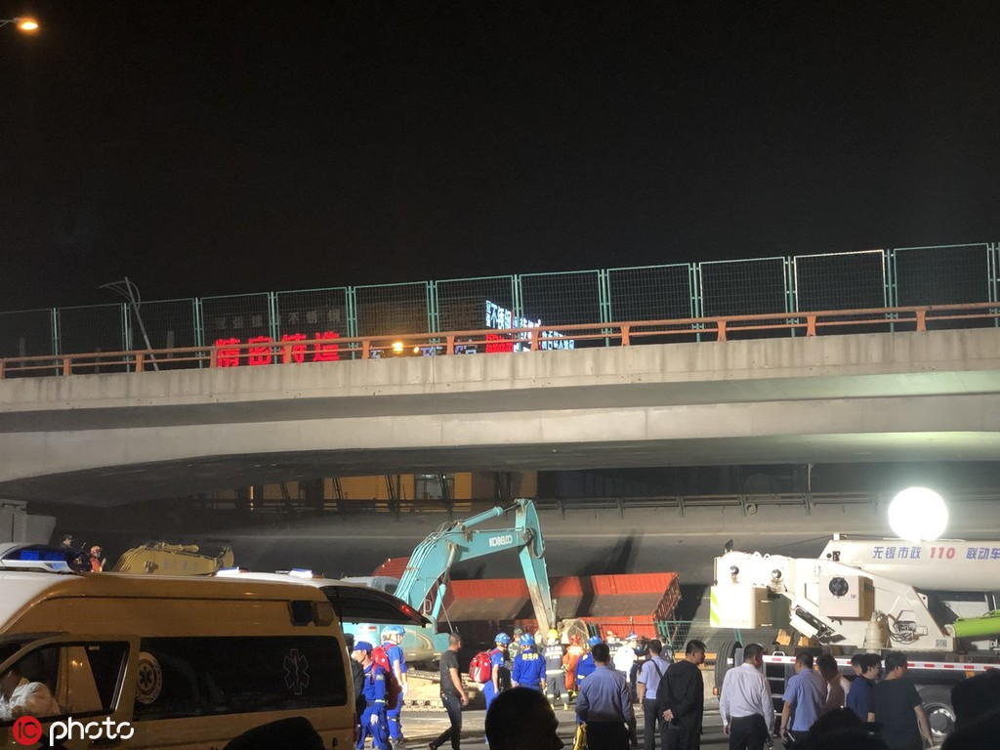

“所有开货车的，我估计百分之九十都有过（超载）。”广东揭阳的卡车司机王世欢在帖子中写道，“我也有过超载。”
2019年10月10日，无锡一高架桥因货车超载而发生侧翻，造成3人死亡，2人受伤。10月15日，某卡车司机实名制线上社区发起了“关于超载，我有话说”的话题，王世欢等近两千名卡车司机在该话题下发帖及评论。

10·10无锡高架桥侧翻事故现场 图片来源：IC photo
在这些帖子中，卡车司机们一方面深知超载给自身和社会带来的危险，表示不应超载、不想超载，另一方面也试图用自己的工作经验和所见所闻去“合理化超载”。
正如潘长福等卡车司机所质问的，“是社会有问题，是市场有问题，还是司机群体有问题？一谓（味）的把鞭子打在司机头上，公平吗？”
运价:市场的规律
"不超没钱。"南通卡车司机杨兴家在“关于超载，我有话说”的话题下，发了这四个字。浏览各个卡车司机社区，会发现“不超载就不赚钱”不仅仅是杨兴家的个人看法，而是不少司机持有的观点。
“运费低”是各平台的卡车司机们普遍提到的一个超载原因。
1949年以来，我国公路货运价格的制定先后经历了三个阶段：运价统一管理阶段、“以国家计划为主、市场调节价为辅”阶段和市场定价阶段。目前，除了个别货物外，我国的货运价格基本由市场进行调节，国家主要发挥宏观调控的作用。
若将近年来运价变化与物价变化作比较，会发现随着物价的上升，运价并没有随之增长，反而呈现下降趋势。沈阳宋师傅表示，2012年长春到成都的运费是23000元到25000元，而2017年的运费已经下降到了20000元。

唐山卡车司机李东海从事货运行业近二十年，他将这种现象的原因归结为货运市场的“供大于求”:“庄里年轻的男的现在有几个在家啊，要不出去打工，要不就都出去拉货去了。车忒多，你不拉他拉，不像前几年好跑了。”
货运市场繁荣时期，司机们可以挑货、拣货，选择价格合适的货物去拉；但随着近年来卡车数量的快速增长，货运市场已近饱和，平均每辆车能够拉到的货物量呈降低趋势。
由于车多货少，司机们在市场中的议价地位也逐渐式微，往往处于一种“到处找货”的状态，甚至“见货就拉”。在这种情况下，恶性竞争不可避免地出现，超载就是其中之一。
司机通过超载，无意中将成本转移给了社会来承担：道路运营年限缩短，交通事故增多，货运量流失……有学者尝试估计超载造成的经济损失，发现每吨超载货物运输一千米的社会经济损失达0.402元。而社会却没有办法将超载带来的成本转移给货主，价格传导在这一环失效，最终形成了“运价越低，超载越严重；超载越严重，运价越低”的恶性循环。
已经有不少司机感受到了这一恶性循环的存在，希望整个卡车司机群体可以团结起来，抵制超载。四平市卡车司机郑秋壮在帖子中写道：“全国都在查超载，我们能不能借这个机会，慢慢的形成一种习惯，就是不超载，然后借助群体的力量，让运费调上来呢？毕竟拉标吨的安全系数还是高一点，养车不容易呀！”
成本：缺失的安全感
“要是碰上你倒霉，也不挣钱。这罚点，那花点，吃喝拉撒，这事那事，反正出门就是钱。”——卡车司机李东海
李东海表示，每次跑车的成本具有很大的随机性，往往是出发之前难以准确计算的。
一是支出项目难以预计。通常情况下，每次运输的花销主要体现在油费、过路过桥费、罚款和生活费用上面。但是在运输过程中，不可预期的道路限行、车辆磨损、出现事故、偷油偷货等情况随时可能成为新的支出项目，使得他们的预期收入大打折扣。
二是每项支出数额难以预计。油费、过路过桥费、罚款和生活费用与司机选择的路线、路况、运气等很多因素相关，司机在出发之前对于这些支出会有预期，但是无法算出具体的数额。
油费和过路过桥费是最主要的两项支出
点击查看具体数据
数据来源：《中国卡车司机调查报告》NO.1
对全国卡车司机进行问卷调查后发现，2016年，油费和过路过桥费是我国卡车司机最主要的两项支出。长期以来，由于这两项支出数额较大且无法避免，为一些违法产业和灰色收入提供了条件。
小油与偷油
为了节省成本，一些司机选择去私人加油站加“小油”。“小油”的需求催生了汽油、柴油的私人倒卖，一些倒卖者甚至冒着违法犯罪的风险去服务区偷油。不少司机在路上都遇到过“偷油”行为，这也是他们路途中难以预计的支出之一。
“在服务区睡觉，丢过三四回油。” 淄博梁师傅说，“从这个高速口上去，过两三个服务区，一宿能偷一万块钱的油。没人管，发现了也不能下车，下车揍死你。”
各种各样的罚款
我国一些地区存在着随意设卡、收费繁多、罚款去向不明等问题，有些甚至出现了“年票”“月票”，只要先花一定数目的钱从执法部门购买“年票”“月票”，就可以明目张胆地超载。
带车黄牛是公路收费中经常出现的一种角色，他们向卡车司机收取一定费用，帮助司机抵消超载扣分或规避更多的罚款。在卡车司机社区寻找黄牛的帖子下，许多卡车司机给出了答案：“交警队门口的商店老板”“停车场看门的”“卖烟卖水的”“去车管所附近溜达一圈黄牛就会找你”。
此外，一些非常规的支出事项也会对卡车司机收入产生重大影响。交通事故就是其中一例。卡车司机交通事故的发生率并不高，2016年，发生过1次交通事故的卡车司机占9.4%，发生2次及以上的卡车司机占4.9%。但交通事故的损失通常比较惨重，一次事故可能就会葬送司机的职业生涯甚至生命。
今年7月，李东海出了一场车祸。从石家庄回唐山的路上，他的卡车与另一辆卡车相撞，身体多处骨折，住进了医院。谈及这件事，他最痛心的不是自己受了伤，而是“卡车报废了”。
“我快五十了，再想从头开始，没那个体力了。”
路况的多变和成本的不确定性，使得卡车司机每趟拉货的收益难以达到预期，未来的生活也难以得到保障。在这种情况下，超载作为一种增加收入的方式，成为一些卡车司机的选择。
治超：未来会好吗？
“现在抓到超载车后先卸载，然后交警处罚。现在是一超四罚，罚司机、罚承运人、罚装载企业、罚货运企业。”——路政大队长何达
治超，还需治本
无锡事故之后，各地治超力度骤然加大，运价出现不同程度的上升。
据媒体报道，高架桥事故后，执法部门严查超载，有些公司从江阴到无锡市区的短途钢材运价由8元一吨涨到30多元一吨，涨了三四倍，钢材也或将面临涨价。
运价上涨背后，是我国物流成本的居高不下。2018年，中国社会物流总费用达283.1万亿元，占GDP的14.8%，而发达国家的物流成本一般占GDP的10%左右。长期以来，较高的物流成本被超载“吸收”，未能体现在下游市场的货物价格上。如今治超力度加大，物流成本压力从卡车司机转移到了货主，货物价格在一定时间内的波动在所难免。至于货价上升是否会反过来推动新一轮的超载，还是促使物流成本下降，还不得而知。
有学者认为，物流成本较高的根源是我国运输结构与产业结构的不匹配。
2018年，我国一、二、三产业占GDP比重分别约为8%，41%和51%。其中第二产业占比高于所有发达国家（点击“发展中国家和地区”图例，查看更清楚），在发展中国家中也处于中等偏上的位置。
2018年世界主要国家和地区三大产业占GDP比重
点击图例标签，删除相应数据
数据来源：美国中央情报局
第二产业是对运输依赖性较强的产业，运输工具的选择会对生产成本产生较大影响。一般来说，铁路、水运等大型运输工具，成本较低，适合大型货物的运输。
然而我国铁路和水运货运能力一直落后于公路。2018年我国公路完成货运量395.69亿吨，铁路完成货物总发送量40.26亿吨，水运完成货运量70.27亿吨，铁路和水运两者加和不及公路货运量，运力难以满足货运需求。一些适合用铁路、水运运输的货物只能用公路运输，提高了物流成本的同时，也增加了超载的风险。
不过，国家已经注意到了这一问题的存在，近年频繁提到“公转铁”，把运输结构调整提上日程。唐山就是一个例子。
1
唐山是典型的以第二产业为主的城市，其中钢铁产业尤为突出。产业内容决定了唐山卡车司机拉载的货物以钢和生产钢的原材料（煤、矿石等）为主，超载现象一度比较严重。
何达在唐山某地做了二十多年的路政大队长，他告诉记者，唐山货运路线主要有两种。一是从外地将钢的原材料运往唐山，如从新疆、内蒙和山西运输煤炭，从港口运输原材料等；二是将钢铁产品运出唐山，如运到东北、新疆、山东等。在铁路运力不足的时期，这些主要靠卡车司机一车一车地运输。
2
为响应国家“公转铁”政策，也是出于环境保护考虑，2010年后，唐山附近修建多条货运线路，部分分担了公路货运量，降低了运输成本，也缓解了超载问题。
何达表示，目前长途运输的卡车基本上都是标载，“去往秦皇岛等周边市区的短途运输超载多一点。”
“公转铁”后，作为铁路运输“最后一公里”的卡车，在短途运输中的超载行为，还需要进一步加以治理。
治超，一直在努力
对超限超载，我国上世纪80年代起就开始着手治理，规章制度经过多次调整也逐渐完善。特别是2016年9月21日出台的《超限运输车辆行驶公路管理规定》，统一了超载标准，提出“路警联合”、“一超四罚”等措施，逐步与国际接轨。
近些年，国家对于治超执法问题也越来越重视。2018年11月，国家出台了《关于深化交通运输综合行政执法改革的指导意见》，将路政、运管等 7个路面执法机构合成一支队伍，清理编外人员，并将执法经费纳入财政，杜绝罚款与收入挂钩，从而有效避免了以往治超执法中的乱收费、重复收费、互相推诿等问题。
“原来有罚款是因为各地经费自收自支，以罚款养人，现在人员经费都由财政负担了，罚款都交给国家。”何达表示，目前治超工作不再有罚款任务，而是通过抽测超载率来衡量工作质量。
此外，科技治超与人力治超的有机结合，也对超载治理起到了一定的推动作用。“唐山建了很多不停车监测系统，能够显示从上面驶过的车辆重量。显示超的，前面有治超人员就会把它截停，直接去卸载场过泵去了。”
目前，我国的超载情况虽然时有反弹，但整体上有所好转。在openlaw网站中检索有关超载的法律文书，发现自2016年底“921新政”实施以来，有关超载的案件数量明显下降。2017年该网站共收录关于超载的裁判文书29791份，2019年（截至12月）已下降到15376份。何达在接受采访时也多次表示，唐山要在年底建成无超限超载城市，目前的治超效果已经相当明显。
结语
超载，未来会好吗？
何达认为会。“唐山在河北做的承诺是到年底消除百吨王，现在效果相当好了。”
李东海认为会。“超载说白了，就是人贪心，素质没上去。其他说什么理由都没用。提高素质得有个过程，慢慢的就好了。”
“在“关于超载，我有话说”话题下发帖的卡车司机也认为会。
“我希望治超越严厉越好，都能正常地装载货物。只有这样我们的运费才能往上提一点。”
“还是不超载的好，生命只有一次……开车挣多少钱都没关系，只要我们能平平安安地每一天回家。”
“从源头整治超载，还司机一个绿色的天空！”
“我就说我没超过载……超过十吨的货我连问都不问，不拉！”
……
“关于超载，我有话说”话题下的帖子节选，大部分司机都表达了对于严格治超、消除超载的期待。